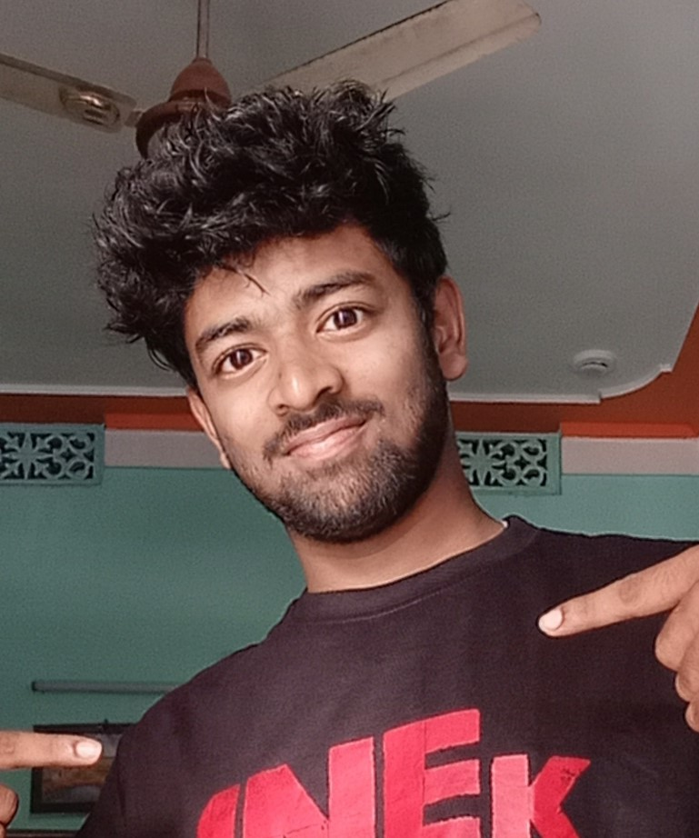

About Me
Meet Venu Gopal- a motivated and driven individual with a passion for technology and a thrist for knowledge.Venu's journey began in JNV Gajapati where he completed his primary and secondary education with flying colors.He scored an impressive 95% in class 10th and 89% in 12th.
With a keen interest in technology,Venu decided to pursue a degree in computer science at Centurion university. His dedication and commitment to his studies helped him excel in his coursework and gain a deeper understanding of the field.
But Venu's interest go beyond just technology.He has love for psychology,writing and watching movies.He enjoys exploring different perspectives and discovering new ideas through these hobbies.
As a well rounded individual with a thrist for knowledge,Venu is sure to bring his diverse experiences and unique perspective to any project he works on.He is always looking for new challenges and opportunities to grow both personally and professionally.
My education
Matriculation
Intermediate
Graduation
Portfolio
-
Project 1: File encryption using JAVA
This project is aimed at developing a desktop-based application named File encryption is the process of converting a readable file into an unreadable format, which can only be accessed with the appropriate decryption key. This is done to protect sensitive data and prevent unauthorized access to it. File encryption can be used to protect files on a local device, in transit over a network, or stored on a remote server. File encryption protects individual files or file systems by encrypting them with a specific key, making them accessible only to the keyholder. The goal is to prevent malicious or unauthorized parties from accessing files that are stored on the disk. Support for file encryption can be built into an operating system or file system. A decryption key allows access to the sensitive files. File encryption is helpful if a user needs to send individual files securely over the internet or store them on a removable device such as a USB stick. File encryption is an important security measure for protecting sensitive data from unauthorized access. It is widely used in industries such as healthcare, finance, and government, as well as by individuals who want to protect their personal data. There are many different encryption techniques available, each with its own level of complexity and strength. While encryption is a powerful tool for protecting sensitive data, it's important to remember that no system is completely fool proof, and there is always a risk of vulnerabilities being exploited.
-
Project 2: Automatic short answer questions generation from text
The purpose of this project is to develop an automatic system that generates short answer questions (SAQs) from a given text using Bloom's Taxonomy as a framework. Bloom's Taxonomy is a widely used classification system that categorizes learning objectives into different cognitive domains, such as knowledge, comprehension, application, analysis, synthesis, and evaluation. The system aims to assess students' understanding and critical thinking skills by generating questions that align with specific cognitive levels.
Download my resume by clicking here
Contact Me
Phone: 8260676280
You can reach me at venu062269@gmail.com